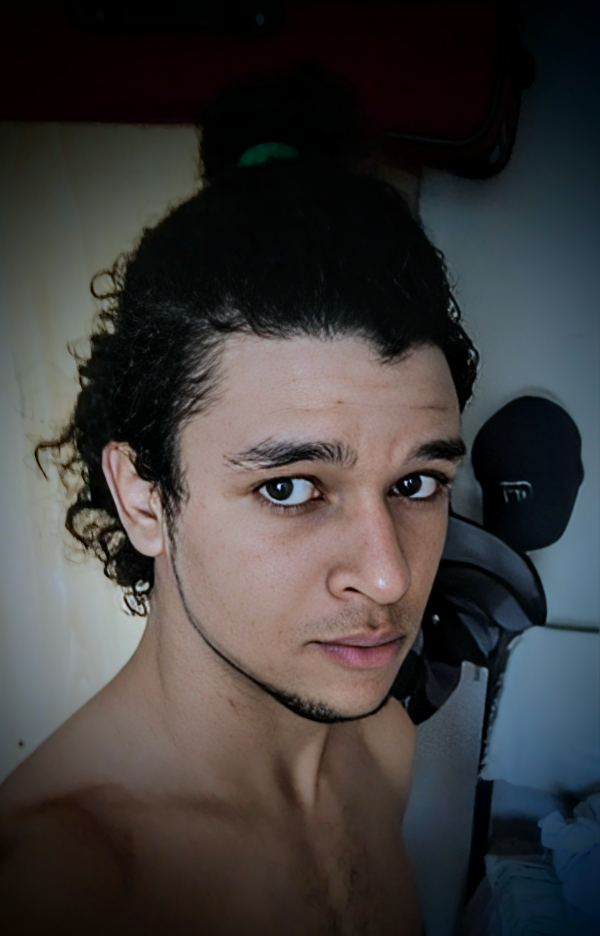

Información Personal
Conóceme

Nombre Completo:
José Gabriel Giró Soria
Nacimiento
Nací el 15 de febrero del 2002, en Santiago de Cuba, fuí criado por mis padres José Giró Rodríguez(padre) y Yaderkis Soria Bueno(madre) en el municipio Songo-La Maya.
Estudios
- Cursé mis estudios primarios y secundarios en las escuelas "28 de Enero" y "Luis Alfonso Silva Tablada" respectivamente, culminando con buenas calificaciones.
- Luego cursé mis estudios Medio-Superior en el Instituto Preuniversitario "Elvira Cape Lombard" para graduarme de bachiller 2020.
- Después, fuí reclutado por el servicio militar activo para así cumplir mi deber como ciudadano durante 14 meses.
- Al culminar el servicio militar me matriculé como estudiante en La Universidad de las Ciencias Informaticas, donde acualmente soy estudiante residente.
- En el estudio de mi carrera universitaria, he logrado crear este sitio web, con el objetivo de mostrar mis habilidades y conocimientos.
Mi objetivo, meta y propósito como desarrollador web
- Esta pagina web refleja mi compromiso con el constante aprendizaje en ámbito del diseño web responsivo y adaptativo .- Estoy comprometido con la mejora continua de mis habilidades y conocimientos para alcanzar el rol de desarrollador web full stack, y así contribuir de manera significativa a la industria del desarrollo web.
Copyright © 2024. All Rights Reserved. Designed by HTML Codex. Edited by José Gabriel Giró Soria